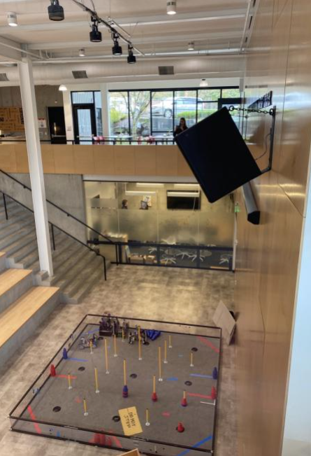

The color scheme that I am using is one that I feel looks really close to natural wooden colors, with the one for this text similar to the color of the sky. I feel that this is mostly a analogous color combination, since all of these colors are similar types of yellowish-brown. With these colors, I am trying to elicit a warm response from the reader, along with one that lets them feel close to nature. I feel like this shows a feeling that is peaceful and cozy, with a "wooden scent" and the warmth of a fire.
